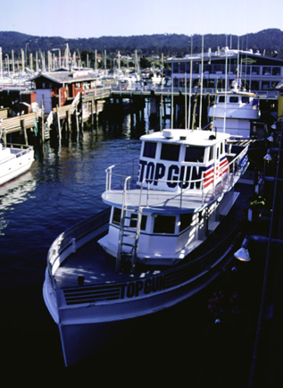

Top Gun. Before you reach the end of the wharf, off to the left
you will see two large boats...these boats are the whale watching boats
that you can go on to see the whale migrations through our area. As you
can see, the boat above is called Top Gun. The photograph was originally
produced with late afternoon sun and a 35 mm camera using Provia slide
film, shutter speed 125, F16. Photo copyright Andrea L. Arredondo, May
11, 2000.
Updated by Andrea Arredondo
5/19/00